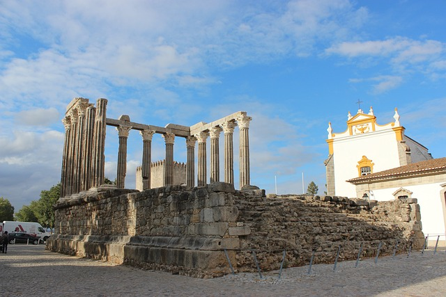

Porto
Porto, segunda maior cidade de Portugal, é encantador com história rica
e cultura vibrante. Oferece vistas deslumbrantes do rio Douro,
arquitetura deslumbrante e o bairro histórico da Ribeira com suas ruas
coloridas.
Coimbra
Coimbra, cidade no centro de Portugal, é conhecida por sua rica história
e prestigiosa universidade. Encanta com arquitetura imponente, como a
Biblioteca Joanina, e cultura vibrante em suas charmosas ruas.
Aveiro
Aveiro, "Veneza de Portugal", é uma cidade costeira encantadora com
canais navegáveis, barcos moliceiros coloridos e arquitetura art
nouveau. Famosa pelos ovos moles e belas praias, é um destino encantador
para explorar a cultura marítima.
Lisboa
Lisboa, a capital de Portugal, combina história, cultura e charme, com
arquitetura única e colinas pitorescas. Pontos turísticos imperdíveis
incluem o Castelo de São Jorge, a Torre de Belém e a Praça do Comércio e
muitos outros.

Évora
Évora, cidade histórica no Alentejo, encanta com seu patrimônio cultural
e arquitetura medieval preservada. Muralhas antigas, ruas de
paralelepípedos e a impressionante Catedral de Évora oferecem uma viagem
no tempo.
Algarve
O Algarve, no sul de Portugal, é um paraíso com praias deslumbrantes,
falésias impressionantes e águas cristalinas. Com clima ensolarado e
cativante, é um destino popular para férias de praia e atividades
aquáticas.
Madeira
Madeira, ilha portuguesa no Oceano Atlântico, é um paraíso natural com
paisagens exuberantes, montanhas impressionantes e florestas exóticas.
Clima ameno proporciona caminhadas e observação da vida selvagem.
Açores
Os Açores, arquipélago no Oceano Atlântico, oferecem paisagens
vulcânicas, lagoas cristalinas e montanhas imponentes. Com atividades ao
ar livre, como caminhadas, mergulho e observação de baleias, é um
destino intocado para amantes da natureza.